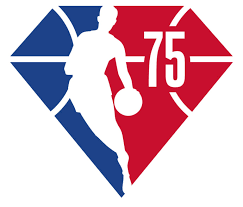

La National Basketball Association, más conocida simplemente por sus siglas NBA, es una liga privada de baloncesto profesional que se disputa en Estados Unidos desde 1949, cuando se fusionaron las ligas profesionales National Basketball League y la Basketball Association of America.o de productos grasos y estimulando el funcionamiento adecuado de todos sus órganos y tejidos.

¿Cuál es el equipo con más títulos de la NBA? Durante la mayor parte de la historia de la NBA Boston Celtics fue el equipo con más títulos. Sin embargo, con el anillo de Disney de 2020, Los Angeles Lakers igualaron a los verdes con 17 campeonatos.